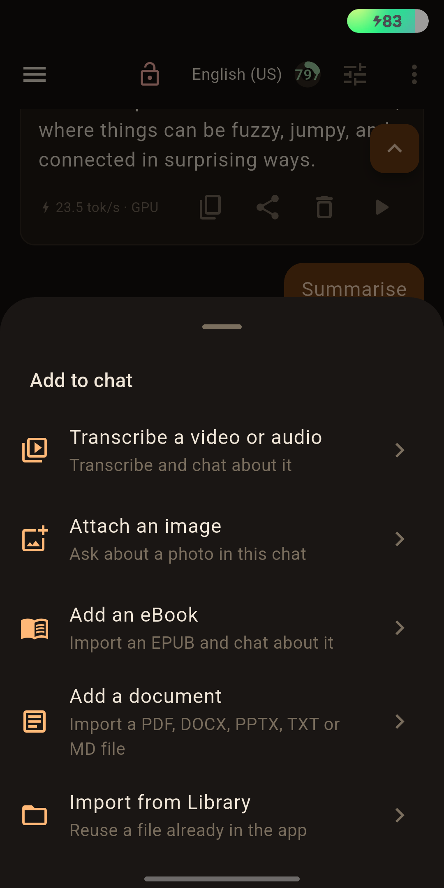
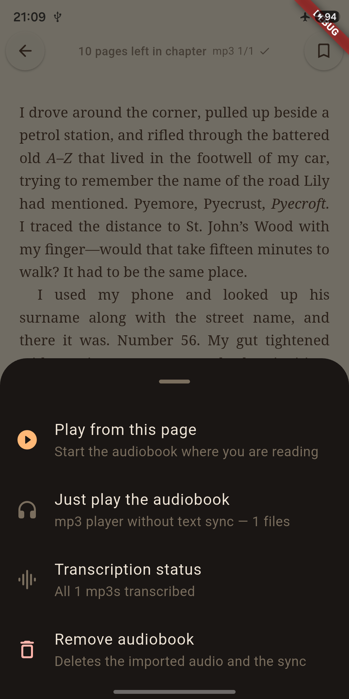
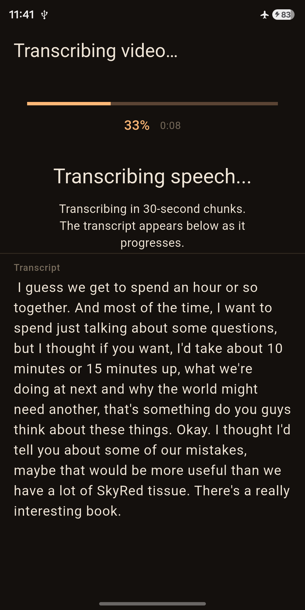
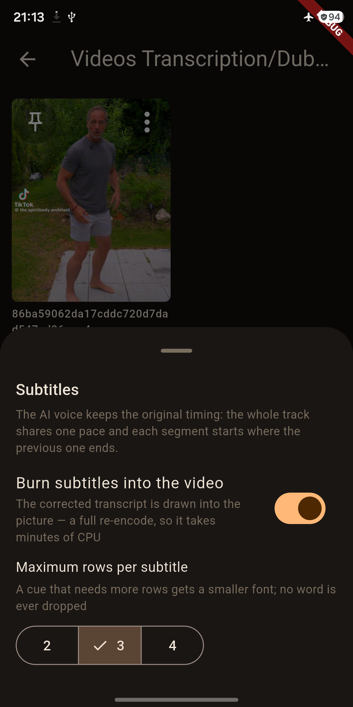
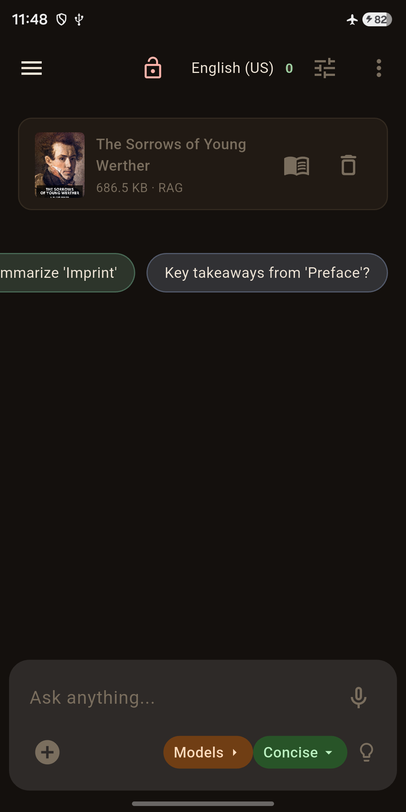
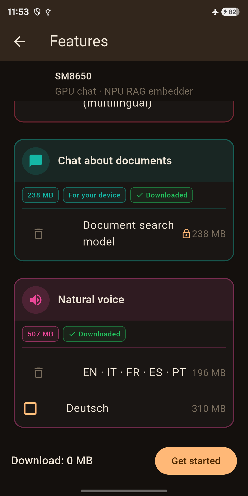
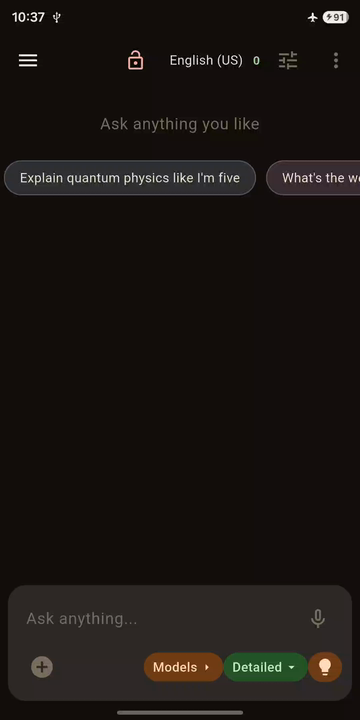
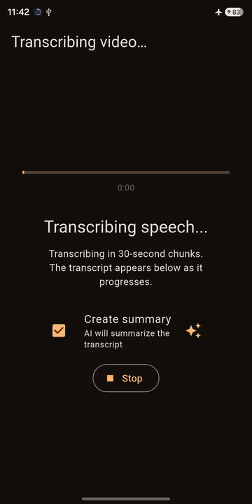
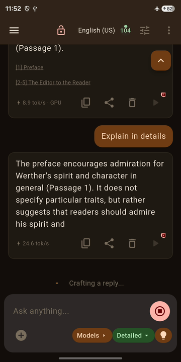

Read & listen · On-device AI · No INTERNET permission
Kenosis AI reads your ePub and PDF library aloud, answers questions about it, and chats on-device — with no internet permission.
No account. No upload. Microphone only when you choose voice. English · Deutsch · Français.
Every built-in feature runs entirely on-device. Live animated demos are right below.

Chat with a local LLM that runs entirely on your phone — even in airplane mode. Suggested follow-ups keep the conversation going, and attached images are read by Ask Image — OCR plus chat about the picture. Dictate into the message field fully offline, or use Translate mode: pick the language you speak and the language to translate into, with the transcript above the translation and both replayable. Hands-free voice conversation is in Beta. Nothing you say or type leaves the device.
A library with recently opened books, a Yet to Read shelf, authors and sorting. Read full-screen with one floating bar: Contents that follows your place, footnotes in a popup, tappable links and the book's own illustrations. Make the page yours — ragged or justified text, Slide, Curl or Fade page turns, five margin steps, and fonts from your phone or your own files. Read-aloud includes a narrator picker beside speed.

Import audiobooks your way — a single MP3 or AAC file, or a ZIP. The book follows the voice: the narrated sentence is highlighted as you listen, and play starts at the page you are reading. Chapters become playable while the rest transcribes in the background, and stopping is only a pause — the next run picks up exactly where it left off, even after a restart. Fully offline.


Import any video and transcribe it locally — the transcript streams in live, in 30-second chunks. It runs with the screen off and resumes if interrupted, exports to DOCX or subtitles, and can dub the video with a new voice. Correct the transcript first and the dub, the burned-in subtitles and the .srt all speak the corrected text. Pick a voice in another language and the dub is translated; keep the original untouched if you prefer, with no quality loss. No upload, no server, works offline.


Ask questions and get answers grounded in your own books and files. Document search is NPU-accelerated on Qualcomm, Google Tensor and MediaTek, with a CPU fallback elsewhere — and fully offline.
Long-press a word in a book to copy or share it, highlight it in five colours, attach a note, or look it up in the offline English dictionary — downloaded once, then it works with no internet at all. Ask your on-device model what the word means in the sentence you are reading. Highlights, notes and bookmarks are saved per book, and the reader can suggest teacher-style starter questions from the text.
Real screen recordings, animated as lightweight PNGs — no video files, nothing to stream. Click one to view it full-size.



Most apps say "we value your privacy" in tiny grey text. Kenosis AI proves it — in the Android manifest.
| Permission | Declared? | Why |
|---|---|---|
| INTERNET | ✗ absent — intentionally | App cannot phone home; Android enforces this |
| READ / WRITE_EXTERNAL_STORAGE | ✗ absent | Storage Access Framework instead — you pick the file |
| CAMERA | ✗ absent | Video comes in via share intent |
| CONTACTS / LOCATION | ✗ absent | No social or location features |
| RECORD_AUDIO | ✓ declared | Only when you start voice or dictation; a microphone foreground service keeps the session alive with the screen off |
| POST_NOTIFICATIONS | ✓ declared | Completion notices for long on-device jobs |
| WAKE_LOCK | ✓ declared | Keeps the CPU working during transcription, indexing and read-aloud; released when the job ends |
Foreground-service entries (FOREGROUND_SERVICE, FOREGROUND_SERVICE_MICROPHONE, FOREGROUND_SERVICE_DATA_SYNC) and VIBRATE support those long-running jobs. None of them grant network access — INTERNET is still absent.
Yes — completely. The app ships without the Android INTERNET permission, so it cannot connect to anything. Transcription and analysis both run on-device. Airplane mode is fine. See how it compares with the five most popular offline AI apps →
Gemma 4 E2B and E4B, MiniCPM 5 1B, Whisper for transcription, Kokoro for read-aloud, embeddinggemma for document search, and on-demand pronunciation dictionaries. They are downloaded once via Play Store, on your terms, and stored locally. MiniCPM 5 1B is deliberately small — it is the floor model, chosen so that a 4 GB-RAM phone runs chat, transcription, read-aloud and RAG; the voice assistant needs more than 4 GB and a Gemma 4 model.
It can't — and that's the point. Web search comes from a separate, open-source plugin app: the host keeps no INTERNET permission, and the plugin shows a live log of every request it makes. By default you approve each search before it happens; automatic approval is optional.
Android 10+ phones. A 4 GB-RAM phone runs chat, transcription, read-aloud and RAG with the MiniCPM 5 1B floor model (a 793 MB on-demand pack); the voice assistant needs more than 4 GB and a Gemma 4 model. NPU-accelerated embeddings work on Qualcomm, Google Tensor (Pixel) and MediaTek SoCs; other devices fall back to CPU.
Yes — the app is free to download with a 14-day trial of all features. After the trial, keep using it with a monthly subscription that renews automatically unless cancelled — or pay once for a lifetime licence. No account either way.
Email us — see the "Report a bug" link in the footer. Please include your device model, Android version, and what you were doing when the bug happened.
It's running on your device — no server round-trip, works on videos that never had captions, and you keep the full transcript in your files library. Export it as subtitles, or use it to dub the video with a new voice (for example, to replace the original voice) — translated if you pick a voice in another language.
Yes — a single MP3 or AAC file, or a ZIP. The book follows the voice: the narrated sentence is highlighted as you listen, chapters become playable while the rest transcribes in the background, and stopping is only a pause — playback resumes exactly where it left off. Nothing is uploaded.
English, German and French — every screen, menu and message, with your choice remembered. Legal documents remain in English.
New in 1.9.37 — the reader, rebuilt: footnotes, a Contents view, your own fonts. Read the 1.9.37 release notes →
Free download · 14-day trial · monthly or lifetime · no account either way.